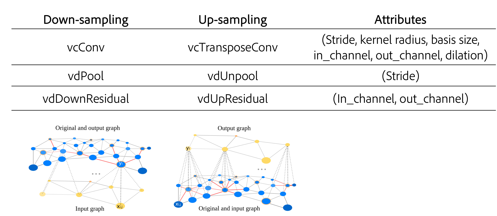
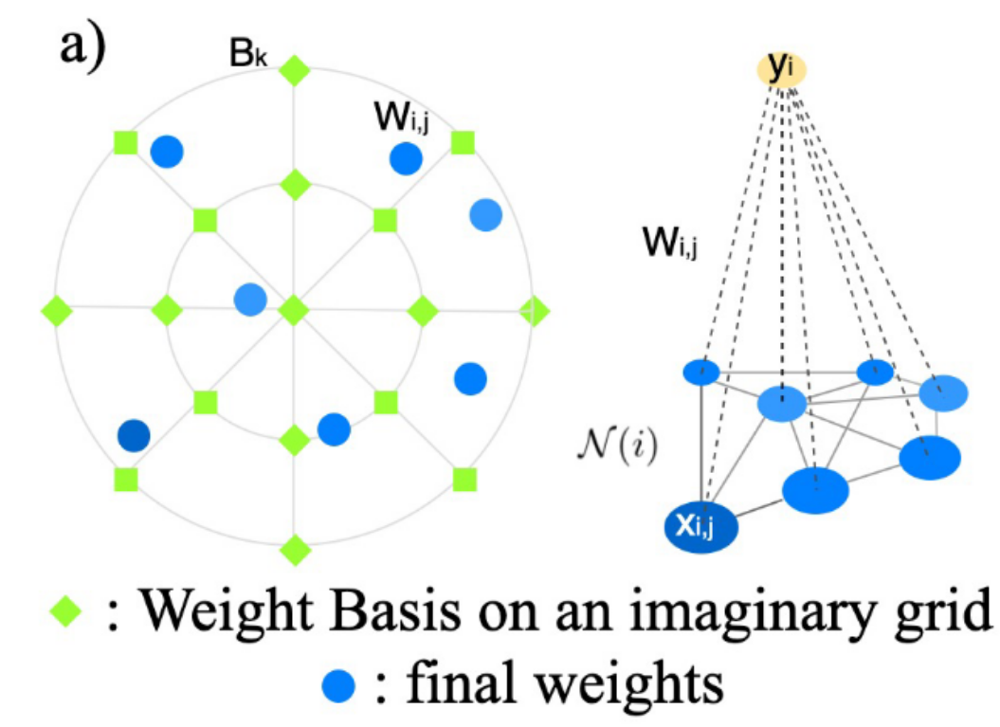
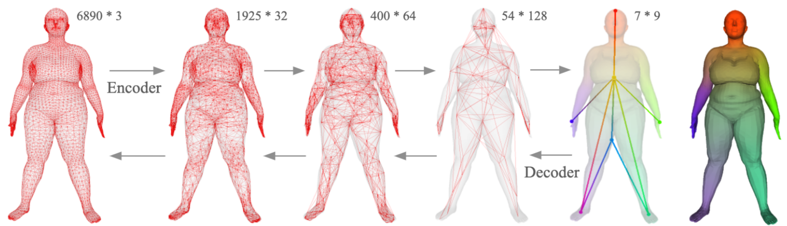
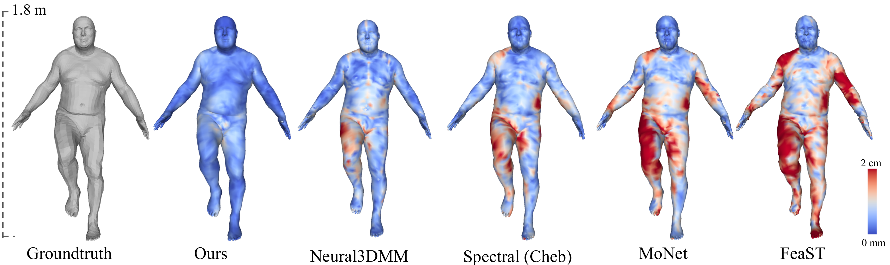
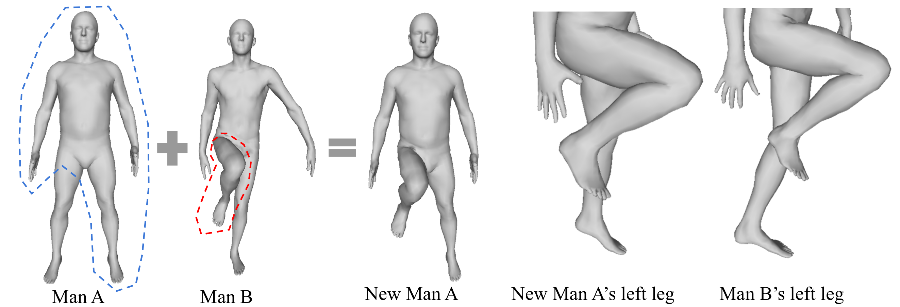
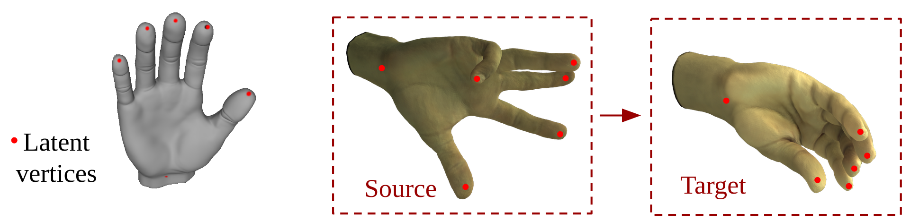
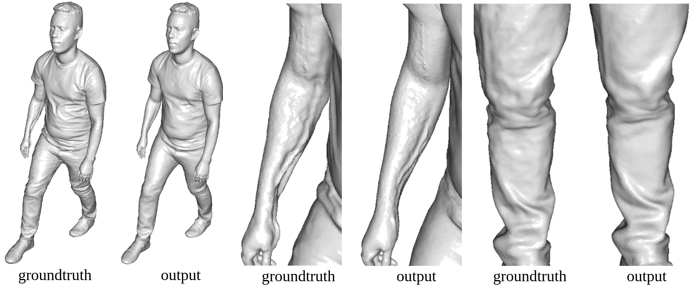
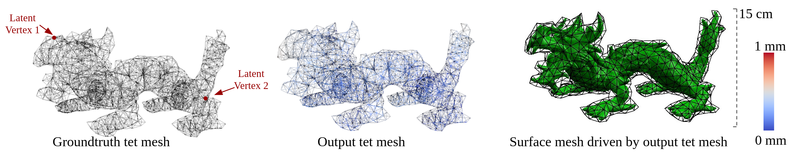

In this project, we propose a fully convolutional mesh autoencoder for arbitrary registered mesh data. It is enabled by our novel convolution and (un)pooling operators learned with globally shared weights and locally varying coefficients which can efficiently capture the spatially varying contents presented by irregular mesh connections. Our model outperforms state-of-the-art methods on reconstruction accuracy. In addition, the latent codes of our network are fully localized thanks to the fully convolutional structure, and thus have much higher interpolation capability than many traditional 3D mesh generation models.
We provide a complete set of convolutional network operators on mesh or graph that are analog to regular convolutional networks.

The intuition is that we can imagine a discrete convolution kernel definedwith weights on a standard grid and we call them Weight Basis. The real vertices in a local regionof the mesh scatter in the grid. The Weight Basis can be shared through the whole mesh, whilethe weights on those real vertices need to be sampled from the Weight Basis by different functionsfrom vertex to vertex. Another perspective for this intuition is that since a mesh is a discretizationof a continuous space and a continuous convolution kernel can be shared spatially on the originalcontinuous space, we should be able to resample the unique continuous kernel to generate the weightsfor each neighborhood of the vertex. To achieve that, the sampling functions need to be defined pervertex locally. Rather than using a handcrafted sampling functions , we learn them through training. Specifically, we compute the weights per each vertex,as the linear combination of the Weight Basis with locally variant coefficients (vc). And we call our convolution and transpose layers as vcConv and vcTransConv
As for pooling and unpooling, we assume the vertex densities are un-even across the mesh, so apply Monte Carlo sampling for feature aggregation. While it’s hard to design agenerally rational density estimation function, we let the network learn the optimal variant density (vd) coefficients across all the training samples. Thus, we named our pool and unpool layers as vdPool/vdUnpool.
1. D-FUAST Human Body Mesh
In this example, we trained an autoencoder with 32933 registered human body meshes from D-FAUST dataset. The original mesh contains the 3D positions of 6890 vertices and our network compresses it with four down-sampling residual blocks to a small graph with 7 vertices, 9 dimensional latent vector on each vertex, and reconstructs it back with four up-sampling residual blocks to the original mesh.
The right most figure is the visualization of the receptive field of the middle layer. One can see that the vertices distribute at the end of the limbs and the head, their receptive fields propagate out and their influence smoothly fades out. This means that each vertex's latent code will infect more on it's surrounding region rather than the whole mesh, which will enable us to locally manipulate the outcome geometry through modifying the latent codes.
Below visualizes the reconstruction error of our network and other types of graph convolutional networks.
Following we show the case of pose transfering through replacing the local latent code. We first run the encoder on both Man A and Man B to obtain their latent codes, then we replace the latent code of the vertex on Man A's leg with the latent code on Man B's leg and feed them to the decoder. The new Man A's left leg now changes to the pose of Man B's left leg, but interestingly still remain the original shape.

2. Hand Mesh with Textures
In this example, we trained an autoencoder on a registered 3D hand dataset. The dataset was captured by Facebook Reality Labs internally. The hand mesh contains about 40k vertices with 3d coordinates and RGB color on each vertex. We set the latent vertices to be at the tips of the five fingers and the wrist. (yes, you can customize the choice of latent vertices using our code). The following video shows the reconstruction results on the test set.
Below we interpolate two hand meshes. We first inferred the latent codes from a source mesh and a target mesh, then we linearly interpolatedthe latent code on each individual latent vertex separately.
3. High Resolution Human Body Mesh
3D data in real applications can have very high resolution. Therefore, we experiment our network ona high-resolution human dataset that contains 24,628 fully aligned meshes, each with 154k vertices and 308k triangles. The bottleneck contains 18 vertices and 64 dimensions per vertex, resulting in a compression rate of 0.25%. Below are part of the results on the test set.
4. Tetrahedrons Mesh
Tet meshes are commonly used for physical simulation. In this case, we simulated 10k frames of deformed tet meshes of an Asian dragon and trained an autoencoder on those tet meshes.
4. Non-manifold Mesh
Unlike many other mesh convolutional networks, ours don't have limitation to manifold meshes. Below is an example of training an autoencoder on a tree model which contains multiple components and many non-manifold structures.